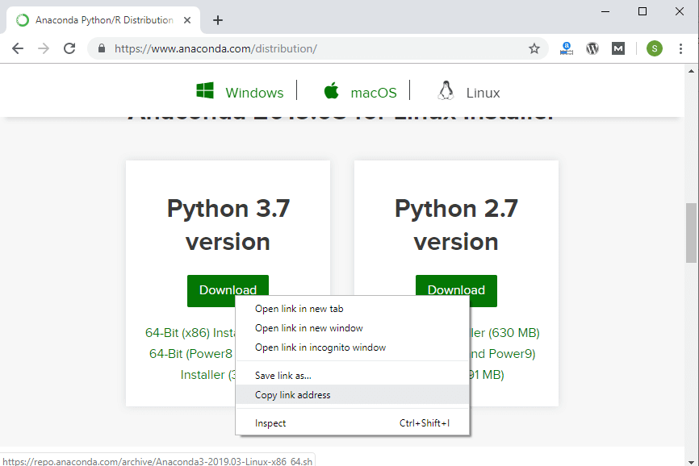

Installing Anaconda on Ubuntu/Mint
This article documents how to install Anaconda on Debian based systems.
Mint comes pre-installed with Python (Version 3.x) and legacy Python (Version 2.7). You can confirm the legacy version of Python is installed by opening up a terminal.
In the terminal type:
$ python
For testing python 3.x installation, type:
$ python3
You will most likely see Python Version 3.x is also installed. You can use the 3.x Version of Python, but each time a new package needs to be downloaded, the $ pip3 install command must be used.
Install the Anaconda distribution of Python to follow the examples in the book without the need to install additional third-party packages.
Steps:
- Visit Anaconda.com/downloads
- Select Linux
- Copy the bash (.sh file) installer link
- Use
wgetto download the bash installer - Run the bash script to install Anaconda3
sourcethe.bash-rcfile to add Anaconda to yourPATH- Start the Python REPL
1. Visit the Anaconda downloads page
Go to the following link: Anaconda.com/downloads
2. Select Linux
On the downloads page, select the Linux operating system
3. Copy the bash (.sh file) installer link
In the Python 3.x Version* box, right-click on the [64-Bit(x86) Installer] link. Select [copy link address].

4. Use wget to download the bash installer
Now that the bash installer (.sh file) link is stored on the clipboard, use wget to download the installer script. In a terminal, cd into the home directory and make a new directory called tmp. cd into tmp and use wget to download the installer. Although the installer is a bash script, it is still quite large and the download will not be immediate (Note the link below includes <release>. the specific release depends on when you download the installer).
$ cd
$ mkdir tmp
$ cd tmp
$ wget https://repo.continuum.io/archive/Anaconda3.sh
5. Run the bash script to install Anaconda3
With the bash installer script downloaded, run the .sh script to install Anaconda3. Ensure you are in the directory where the installer script downloaded:
$ ls
Anaconda3-5.2.0-Linux-x86_64.sh
Run the installer script with bash.
$ bash Anaconda3-5.2.0-Linux-x86_64.sh
Accept the Licence Agreement and allow Anaconda to be added to your PATH. By adding Anaconda to your PATH, the Anaconda distribution of Python will be called when you type $ python in a terminal.
6. source the .bash-rc file to add Anaconda to your PATH
Now that Anaconda3 is installed and Anaconda3 is added to our PATH, source the .bashrc file to load the new PATH environment variable into the current terminal session. Note the .bashrc file is in the home directory. You can see it with $ ls -a.
$ cd ~
$ source .bashrc
7. Start the Python REPL
To verify the installation is complete, open Python from the command line:
$ python
Python 3.6.5 |Anaconda, Inc.| (default, Mar 29 2018, 18:21:58) [GCC 7.2.0] on linux Type “help”, “copyright”, “credits” or “license” for more information. »>
If you see Python 3.6 from Anaconda listed, your installation is complete. To exit the Python REPL, type:
>> exit()